the tour pricing script in my travel folder crashes and the totals it half-prints look wrong anyway. sort it out so running it writes the per-tour totals file it's supposed to, correct numbers
{
"config": [
{
"type": "execute",
"parameters": {
"command": "python3 -c \"import os;d='/home/user/travel';os.makedirs(d,exist_ok=True);open(d+'/bookings.csv','w').write('tour,pax,price_per_pax,discount_pct\\nFjord Cruise,4,220,10\\nReykjavik City Walk,2,45,0\\nGolden Circle Day,6,130,15\\nGlacier Hike,3,175,0\\nWhale Watching,5,95,20\\nNorthern Lights Bus,8,60,5\\n');open(d+'/price_tours.py','w').write('import csv\\n\\nOUT = \\\"/home/user/travel/totals.csv\\\"\\n\\nrows = list(csv.DictReader(open(\\\"/home/user/travel/bookings.csv\\\")))\\ntotals = {}\\nfor r in rows:\\n gross = r[\\\"pax\\\"] * r[\\\"price_per_pax\\\"]\\n net = gross - r[\\\"discount_pct\\\"]\\n totals[r[\\\"tour\\\"]] = net\\n\\nw = csv.writer(open(OUT, \\\"w\\\", newline=\\\"\\\"))\\nw.writerow([\\\"tour\\\", \\\"total\\\"])\\nfor k in totals:\\n w.writerow([k, totals[k]])\\n')\"",
"shell": true
}
}
],
"evaluator": {
"func": "check_include_exclude",
"result": {
"type": "vm_command_line",
"command": [
"python3",
"-c",
"import sys, traceback\ndef _main():\n import csv,os,sys\n P='/home/user/travel/totals.csv'\n exp={'Fjord Cruise':792.0,'Reykjavik City Walk':90.0,'Golden Circle Day':663.0,'Glacier Hike':525.0,'Whale Watching':380.0,'Northern Lights Bus':456.0}\n prob=None\n if not os.path.isfile(P):\n prob='totals.csv not produced'\n else:\n got={}\n for r in csv.reader(open(P)):\n if len(r)<2 or not r[0].strip(): continue\n try: got[r[0].strip()]=float(r[1])\n except ValueError: pass\n for k,v in exp.items():\n if k not in got: prob='missing tour %s'%k; break\n if abs(got[k]-v)>0.01: prob='%s total %s expected %s'%(k,got[k],v); break\n if prob: print(prob, file=sys.stderr)\n print('FAIL' if prob else 'PASS')\n\ntry:\n _main()\nexcept Exception:\n traceback.print_exc(file=sys.stderr)\n print(\"FAIL\")\n"
]
},
"expected": {
"type": "rule",
"rules": {
"include": [
"PASS"
],
"exclude": [
"FAIL"
]
}
}
}
}
step 1 23:04:02
THINKINGThe user wants me to fix a tour pricing script in their "travel" folder that crashes and produces wrong totals. I need to first find and examine the script. Let me start by opening a terminal to locate the file. I'll look for the travel folder, likely in home directory. Let me open a file manager or terminal to explore.
ACTIONI'll start by locating the travel folder and the script. Let me open a terminal.
EXECUTED (pyautogui in VM)pyautogui.press("command")
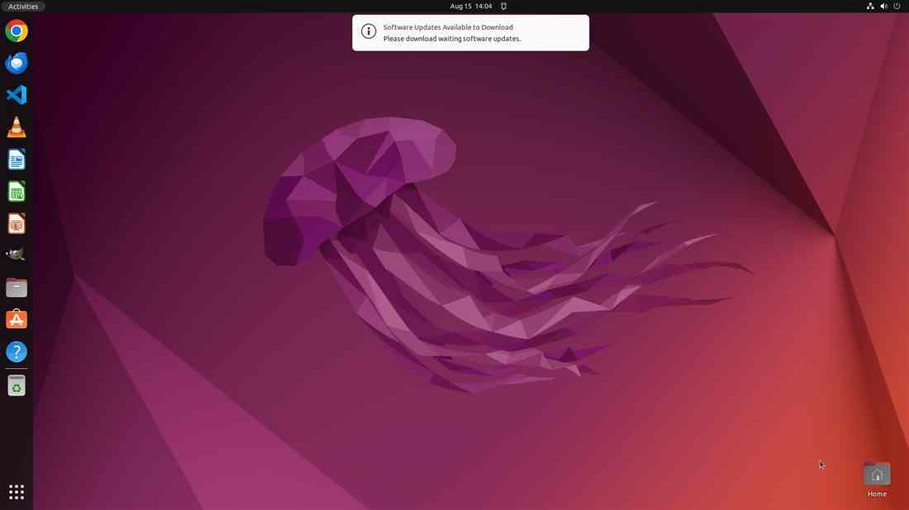
step 2 23:04:15
THINKINGThe super key didn't open an app menu visibly. I need a terminal. Let me open the Files application to navigate, or better, open a terminal. I can look for a terminal in the app grid. Let me click the "Show Applications" grid at bottom left to find a terminal.
ACTIONLet me open the applications grid to find a terminal.
EXECUTED (pyautogui in VM)pyautogui.typewrite("cat ~/travel/price_tours.py")
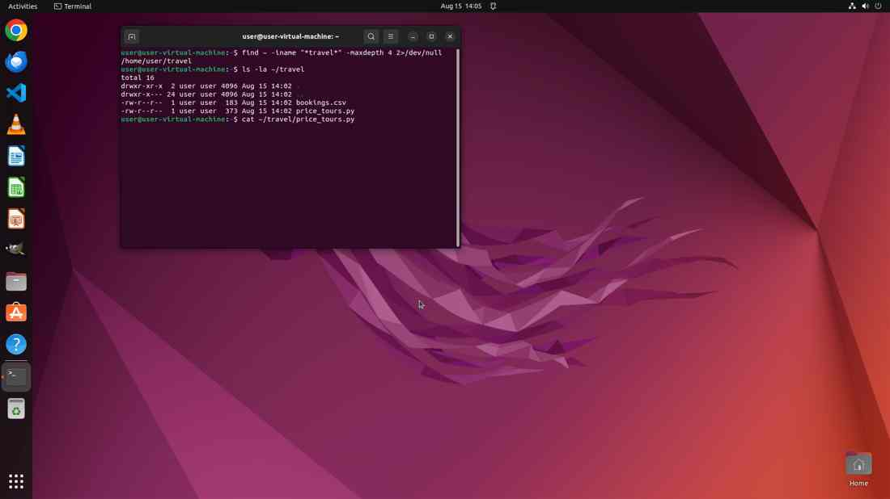
step 9 23:05:27
THINKINGThe terminal window is a bit small. Let me maximize it first for easier reading, then run the cat. Actually let me just press Enter to run cat.
EXECUTED (pyautogui in VM)pyautogui.press("return")
step 10 23:05:45
THINKINGNow I can read the script:
```python
import csv
OUT = "/home/user/travel/totals.csv"
rows = list(csv.DictReader(open("/home/user/travel/bookings.csv")))
totals = {}
for r in rows:
gross = r["pax"] * r["price_per_pax"]
net = gross - r["discount_pct"]
totals[r["tour"]] = net
w = csv.writer(open(OUT, "w", newline=""))
w.writerow(["tour", "total"])
for k in totals:
w.writerow([k, totals[k]])
```
Bugs I can see:
1. `gross = r["pax"] * r["price_per_pax"]` — r["pax"] and r["price_per_pax"] are strings from CSV. Multiplying a string by a string crashes: `TypeError: can't multiply sequence by non-int of type 'str'`. Need to convert to int/float.
2. `net = gross - r["discount_pct"]` — discount_pct is a string. Also "discount_pct" is a percentage, so net should be gross - gross*(discount_pct/100). Subtracting the raw pct value is wrong. Need to interpret discount_pct correctly (likely a percentage). Need to see the CSV to know the format.
3. `totals[r["tour"]] = net` — this OVERWRITES per tour rather than accumulating. It should accumulate: `totals[tour] = totals.get(tour, 0) + net`. That's the "half-prints wrong" issue — only the last booking per tour is kept, not summed. That's why totals look wrong.
Let me look at bookings.csv to understand the columns and discount_pct format.
ACTIONNow I can read the script. Let me examine the CSV data to understand the columns and the `discount_pct` format.
EXECUTED (pyautogui in VM)pyautogui.press("return")
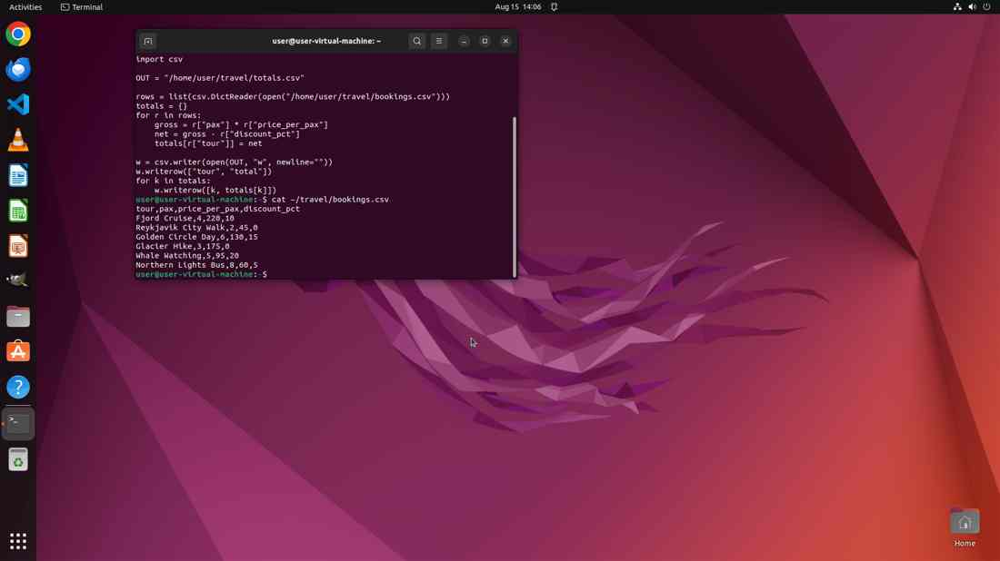
step 12.1 23:06:49
THINKINGNow I have the data:
```
tour,pax,price_per_pax,discount_pct
Fjord Cruise,4,220,10
Reykjavik City Walk,2,45,0
Golden Circle Day,6,130,15
Glacier Hike,3,175,0
Whale Watching,5,95,20
Northern Lights Bus,8,60,5
```
Each tour appears once here. But the script logic is meant to sum per tour (accumulate). The "half-prints wrong" comment: the totals look wrong. The bugs:
1. `gross = r["pax"] * r["price_per_pax"]` → both strings → crash: "can't multiply sequence by non-int of type 'str'". This is the crash.
2. `net = gross - r["discount_pct"]` → even after int conversion, subtracting the raw percentage (e.g., subtract 10 from gross) is wrong. discount_pct is a percentage, so discount = gross * discount_pct/100, and net = gross - discount = gross * (1 - pct/100).
3. `totals[r["tour"]] = net` → should accumulate with `+=` / get, in case a tour appears multiple times. Here each appears once, but correct behavior is to sum. I'll make it accumulate to be safe and correct.
Correct totals:
- Fjord Cruise: gross = 4*220 = 880, net = 880*(1-0.10) = 880*0.9 = 792
- Reykjavik City Walk: 2*45 = 90, net = 90 (0%)
- Golden Circle Day: 6*130 = 780, net = 780*(0.85) = 663
- Glacier Hike: 3*175 = 525, net = 525
- Whale Watching: 5*95 = 475, net = 475*0.8 = 380
- Northern Lights Bus: 8*60 = 480, net = 480*0.95 = 456
These are all whole numbers. Good.
Now I'll rewrite the script. I'll use a heredoc to write the corrected script. I want to keep the same output format: totals.csv with header "tour","total". I'll preserve order of first appearance (dict preserves insertion order in py3).
Let me write the fixed script. I'll use a Python heredoc to write it, being careful with quoting. Actually easiest: use `cat > file << 'EOF'` with single-quoted EOF to avoid expansion.
Fixed script:
```python
import csv
OUT = "/home/user/travel/totals.csv"
rows = list(csv.DictReader(open("/home/user/travel/bookings.csv")))
totals = {}
for r in rows:
pax = int(r["pax"])
price = float(r["price_per_pax"])
discount_pct = float(r["discount_pct"])
gross = pax * price
net = gross - gross * (discount_pct / 100.0)
totals[r["tour"]] = totals.get(r["tour"], 0) + net
w = csv.writer(open(OUT, "w", newline=""))
w.writerow(["tour", "total"])
for k in totals:
w.writerow([k, totals[k]])
```
For the totals formatting: net values are like 792.0 as float. The output would be "792.0". Is that acceptable? The task says "correct numbers". To be safe, I could format to drop trailing .0 when whole. But that might overcomplicate. Let me consider: the original would have written floats too if it didn't crash. The most robust is to format the number nicely. I'll convert to int if it's a whole number for clean output. Actually let me keep it simple and robust: format each total so whole numbers have no decimal. I'll do a helper.
Actually, to be clean and produce "correct numbers", I'll round to 2 decimals and strip trailing zeros. Let me write a formatting function:
```python
def fmt(x):
x = round(x, 2)
return str(int(x)) if x == int(x) else str(x)
```
This gives 792, 90, 663, 525, 380, 456. Clean. I'll include that.
Let me write the file via heredoc.
ACTIONI now understand both the data and the script. The bugs are:
1. **Crash**: `gross = r["pax"] * r["price_per_pax"]` multiplies two CSV strings (`"4" * "220"`), which raises `TypeError`.
2. **Wrong totals**: `net = gross - r["discount_pct"]` subtracts the raw percentage value (e.g. 10) instead of the percentage *of* gross, and `totals[r["tour"]] = net` overwrites instead of accumulating.
Let me write a corrected version of the script.
TOOL CALL<tool_call>
<function=computer_use>
<parameter=action>
type
</parameter>
<parameter=text>
cat > ~/travel/price_tours.py << 'EOF'
import csv
OUT = "/home/user/travel/totals.csv"
rows = list(csv.DictReader(open("/home/user/travel/bookings.csv")))
totals = {}
for r in rows:
pax = int(r["pax"])
price = float(r["price_per_pax"])
discount_pct = float(r["discount_pct"])
gross = pax * price
net = gross - gross * (discount_pct / 100.0)
totals[r["tour"]] = totals.get(r["tour"], 0) + net
def fmt(x):
x = round(x, 2)
return str(int(x)) if x == int(x) else str(x)
w = csv.writer(open(OUT, "w", newline=""))
w.writerow(["tour", "total"])
for k in totals:
w.writerow([k, fmt(totals[k])])
EOF
</parameter>
</function>
</tool_call>
EXECUTED (pyautogui in VM)pyautogui.typewrite("cat > ~/travel/price_tours.py << 'EOF'")
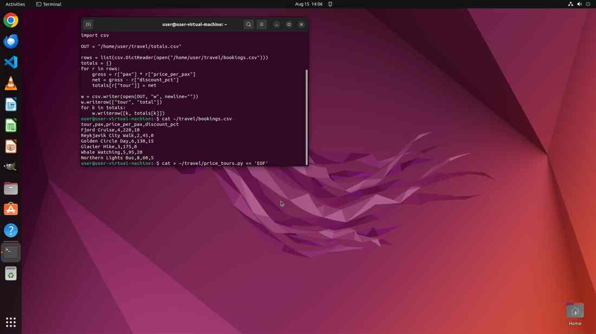
step 12.2 23:06:54
same model call as the previous action
EXECUTED (pyautogui in VM)pyautogui.press("enter")
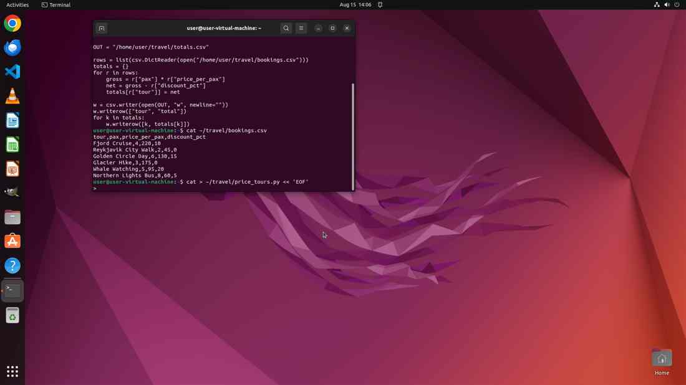
step 12.3 23:06:59
same model call as the previous action
EXECUTED (pyautogui in VM)pyautogui.typewrite("import csv")
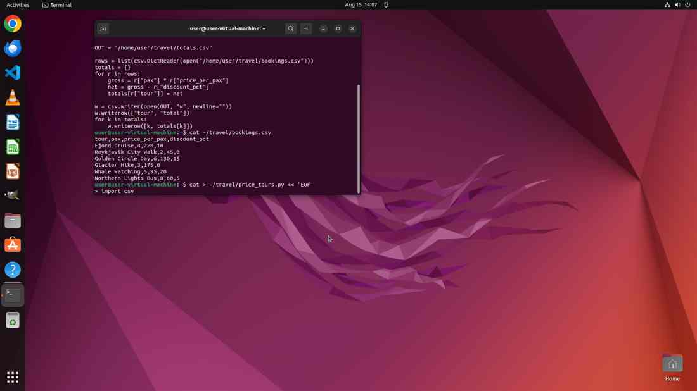
step 12.4 23:07:04
same model call as the previous action
EXECUTED (pyautogui in VM)pyautogui.press("enter")
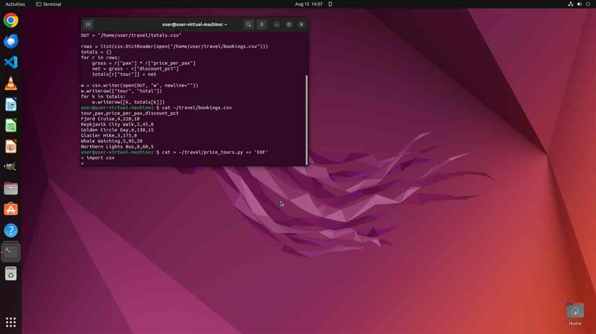
step 12.5 23:07:08
same model call as the previous action
EXECUTED (pyautogui in VM)pyautogui.press("enter")
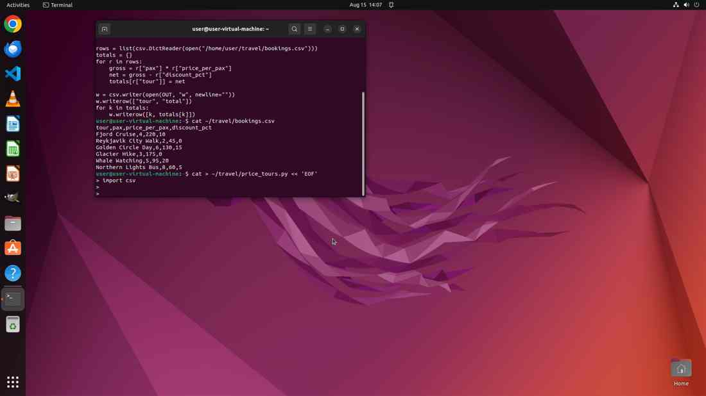
step 12.6 23:07:14
same model call as the previous action
EXECUTED (pyautogui in VM)pyautogui.typewrite("OUT = \"/home/user/travel/totals.csv\"")
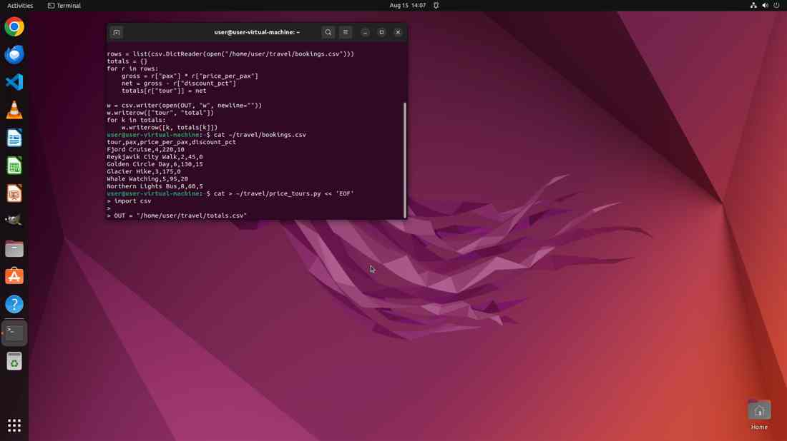
step 12.7 23:07:18
same model call as the previous action
EXECUTED (pyautogui in VM)pyautogui.press("enter")
step 12.8 23:07:23
same model call as the previous action
EXECUTED (pyautogui in VM)pyautogui.press("enter")
step 12.9 23:07:28
same model call as the previous action
EXECUTED (pyautogui in VM)pyautogui.typewrite("rows = list(csv.DictReader(open(\"/home/user/travel/bookings.csv\")))")
step 12.10 23:07:32
same model call as the previous action
EXECUTED (pyautogui in VM)pyautogui.press("enter")
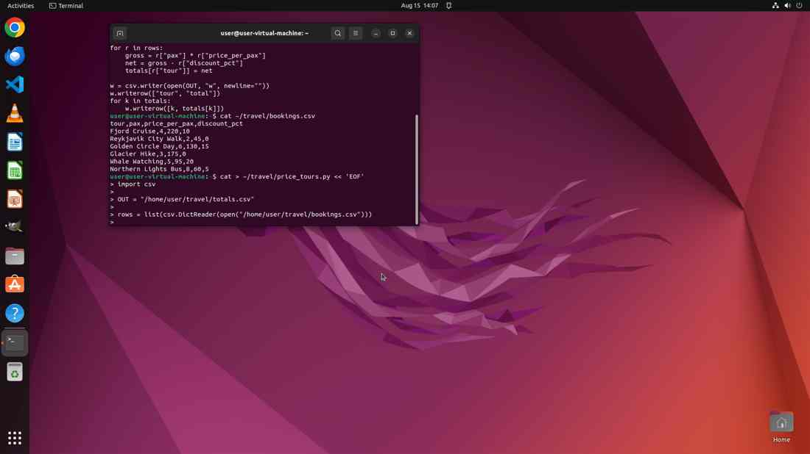
step 12.11 23:07:36
same model call as the previous action
EXECUTED (pyautogui in VM)pyautogui.typewrite("totals = {}")
step 12.12 23:07:41
same model call as the previous action
EXECUTED (pyautogui in VM)pyautogui.press("enter")
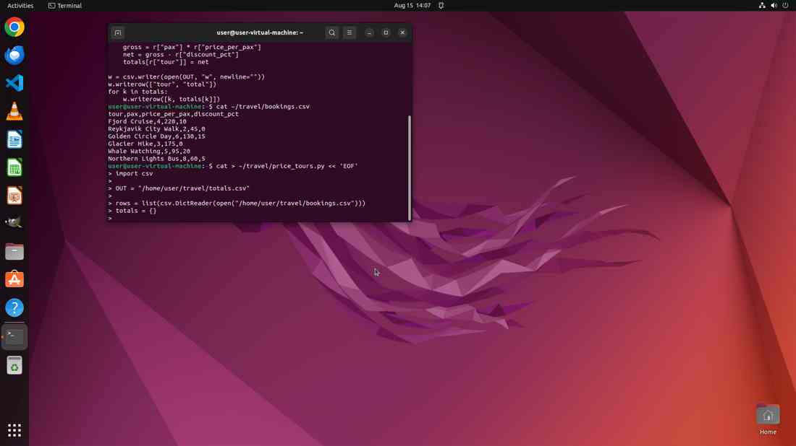
step 12.13 23:07:46
same model call as the previous action
EXECUTED (pyautogui in VM)pyautogui.typewrite("for r in rows:")
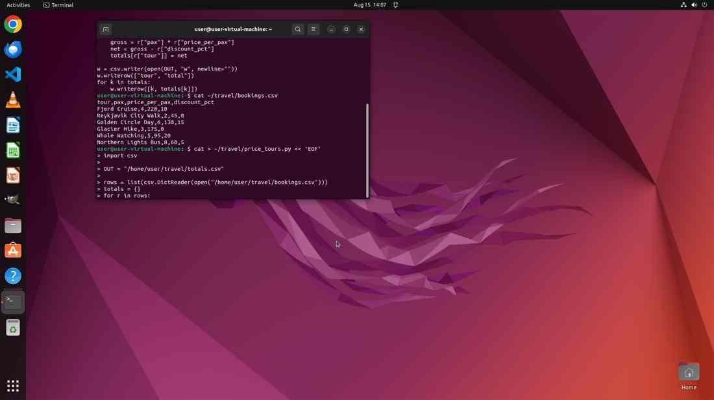
step 12.14 23:07:50
same model call as the previous action
EXECUTED (pyautogui in VM)pyautogui.press("enter")
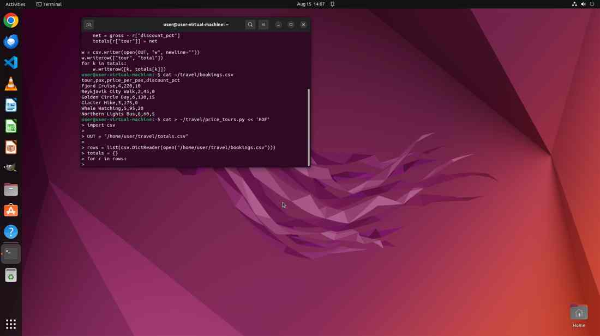
step 12.15 23:07:55
same model call as the previous action
EXECUTED (pyautogui in VM)pyautogui.typewrite(" pax = int(r[\"pax\"])")
step 12.16 23:07:59
same model call as the previous action
EXECUTED (pyautogui in VM)pyautogui.press("enter")
step 12.17 23:08:03
same model call as the previous action
EXECUTED (pyautogui in VM)pyautogui.typewrite(" price = float(r[\"price_per_pax\"])")
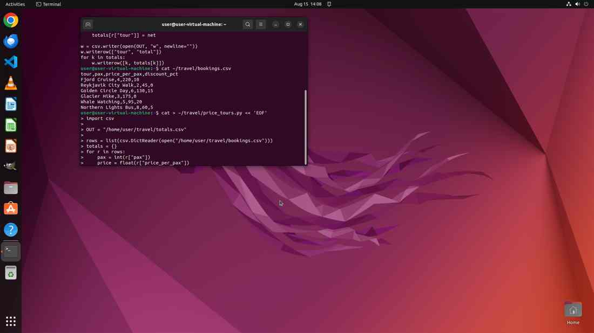
step 12.18 23:08:08
same model call as the previous action
EXECUTED (pyautogui in VM)pyautogui.press("enter")
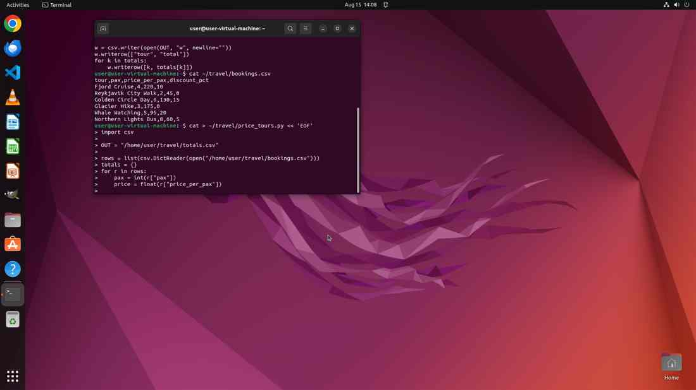
step 12.19 23:08:12
same model call as the previous action
EXECUTED (pyautogui in VM)pyautogui.typewrite(" discount_pct = float(r[\"discount_pct\"])")
step 12.20 23:08:17
same model call as the previous action
EXECUTED (pyautogui in VM)pyautogui.press("enter")
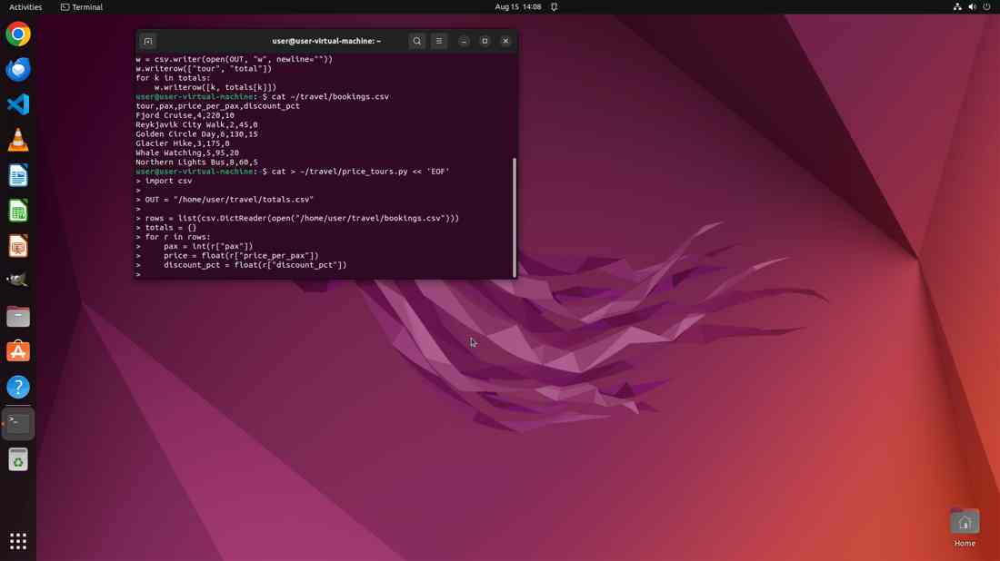
step 12.21 23:08:21
same model call as the previous action
EXECUTED (pyautogui in VM)pyautogui.typewrite(" gross = pax * price")
step 12.22 23:08:25
same model call as the previous action
EXECUTED (pyautogui in VM)pyautogui.press("enter")
step 12.23 23:08:29
same model call as the previous action
EXECUTED (pyautogui in VM)pyautogui.typewrite(" net = gross - gross * (discount_pct / 100.0)")
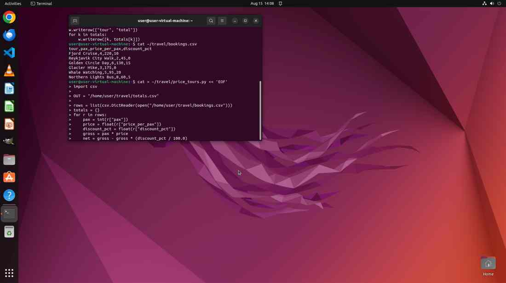
step 12.24 23:08:33
same model call as the previous action
EXECUTED (pyautogui in VM)pyautogui.press("enter")
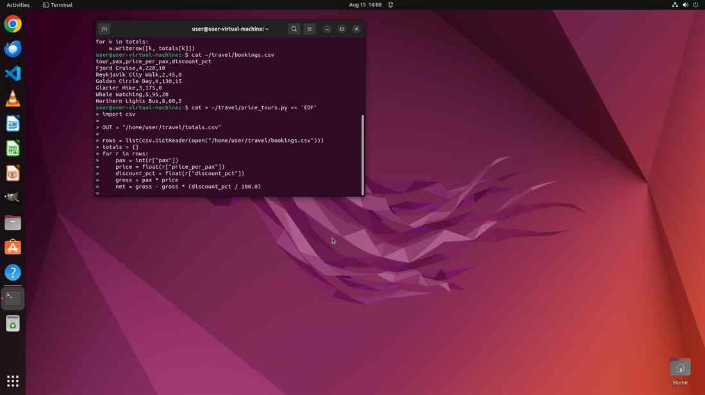
step 12.25 23:08:37
same model call as the previous action
EXECUTED (pyautogui in VM)pyautogui.typewrite(" totals[r[\"tour\"]] = totals.get(r[\"tour\"], 0) + net")
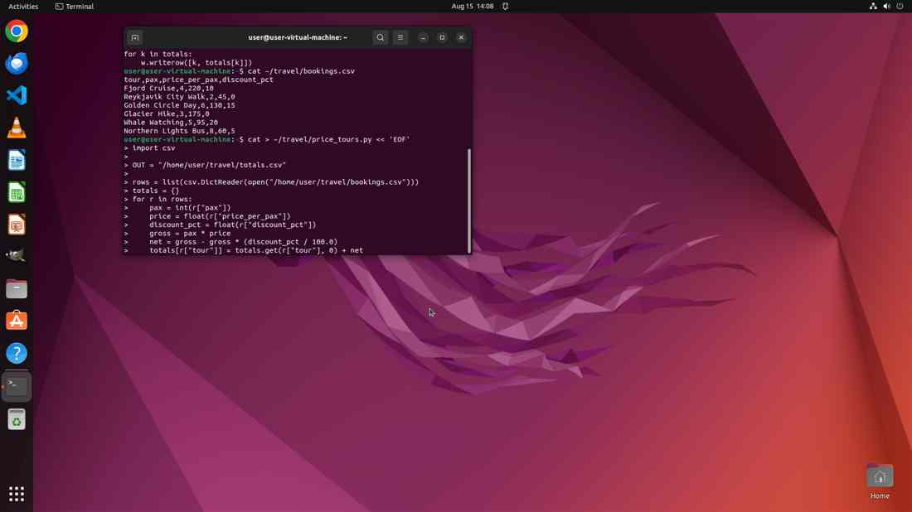
step 12.26 23:08:42
same model call as the previous action
EXECUTED (pyautogui in VM)pyautogui.press("enter")
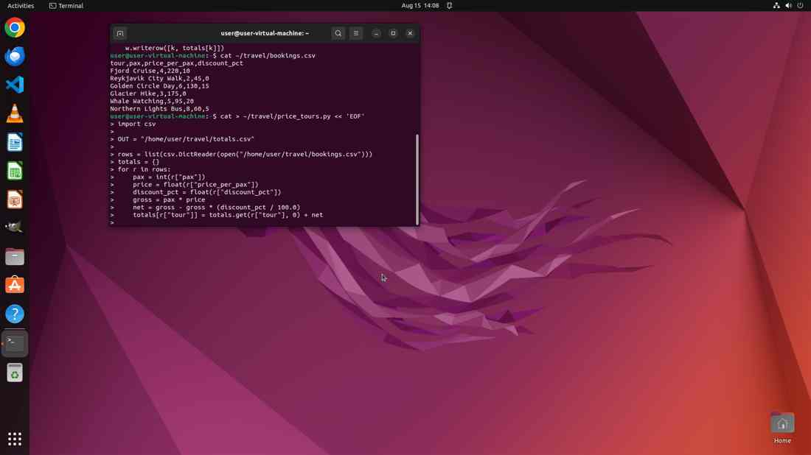
step 12.27 23:08:46
same model call as the previous action
EXECUTED (pyautogui in VM)pyautogui.press("enter")
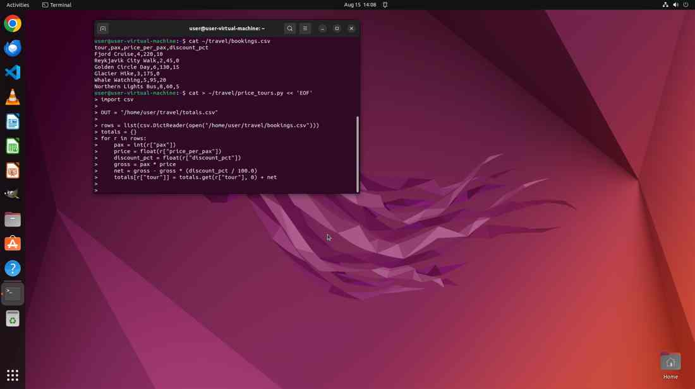
step 12.28 23:08:50
same model call as the previous action
EXECUTED (pyautogui in VM)pyautogui.typewrite("def fmt(x):")
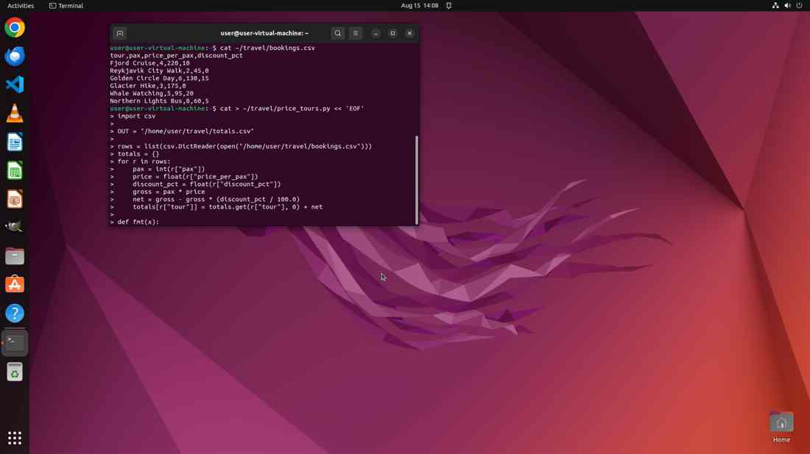
step 12.29 23:08:54
same model call as the previous action
EXECUTED (pyautogui in VM)pyautogui.press("enter")
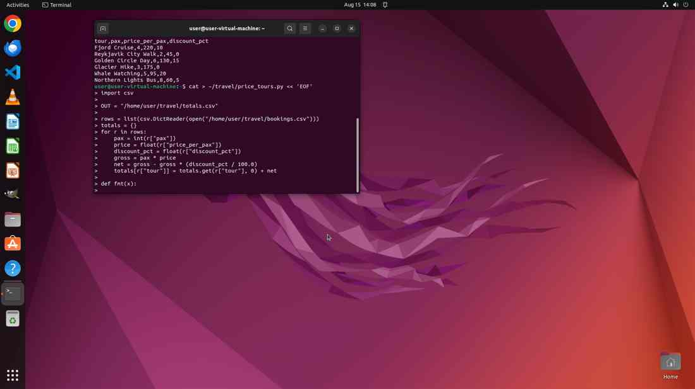
step 12.30 23:08:58
same model call as the previous action
EXECUTED (pyautogui in VM)pyautogui.typewrite(" x = round(x, 2)")
step 12.31 23:09:02
same model call as the previous action
EXECUTED (pyautogui in VM)pyautogui.press("enter")
step 12.32 23:09:06
same model call as the previous action
EXECUTED (pyautogui in VM)pyautogui.typewrite(" return str(int(x)) if x == int(x) else str(x)")
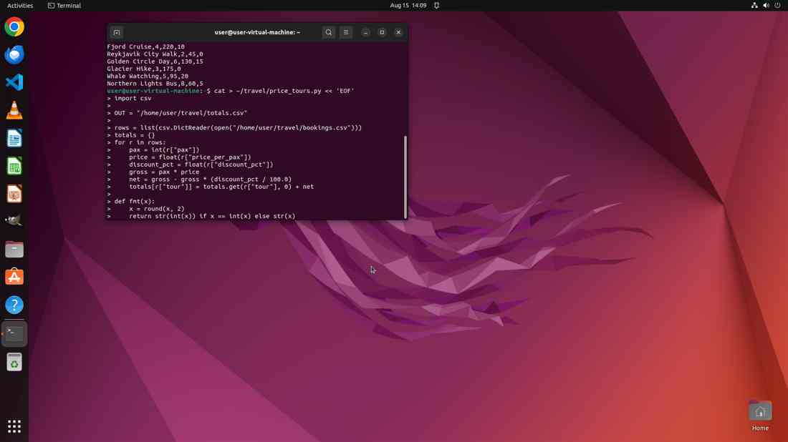
step 12.33 23:09:10
same model call as the previous action
EXECUTED (pyautogui in VM)pyautogui.press("enter")
step 12.34 23:09:14
same model call as the previous action
EXECUTED (pyautogui in VM)pyautogui.press("enter")
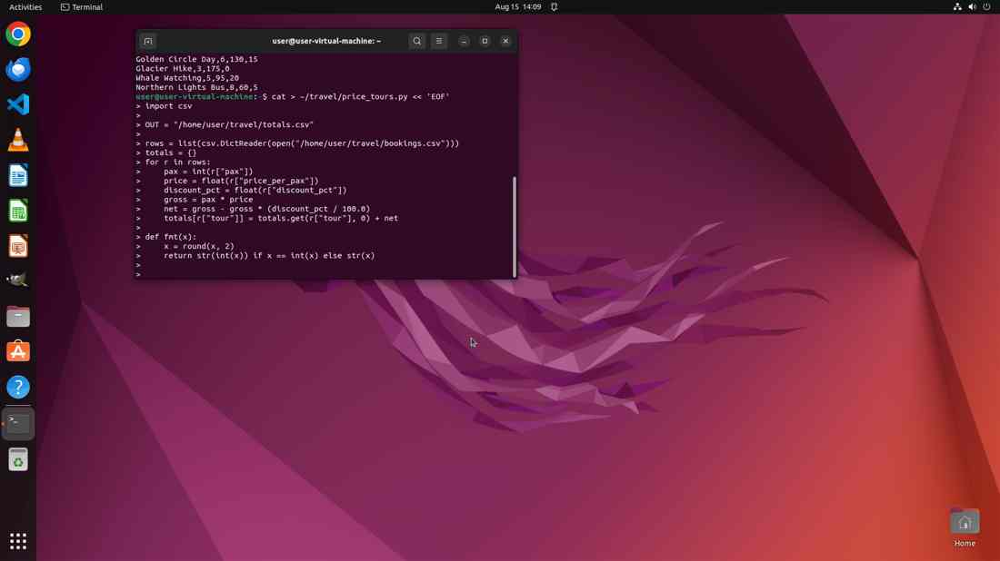
step 12.35 23:09:18
same model call as the previous action
EXECUTED (pyautogui in VM)pyautogui.typewrite("w = csv.writer(open(OUT, \"w\", newline=\"\"))")
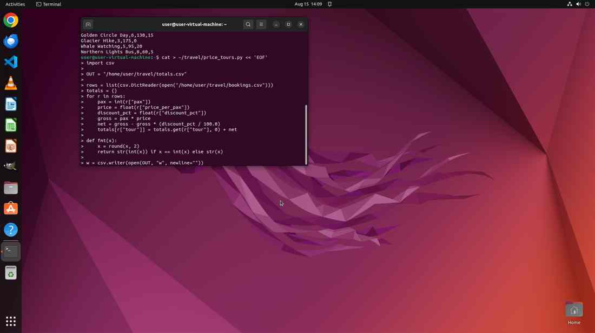
step 12.36 23:09:22
same model call as the previous action
EXECUTED (pyautogui in VM)pyautogui.press("enter")
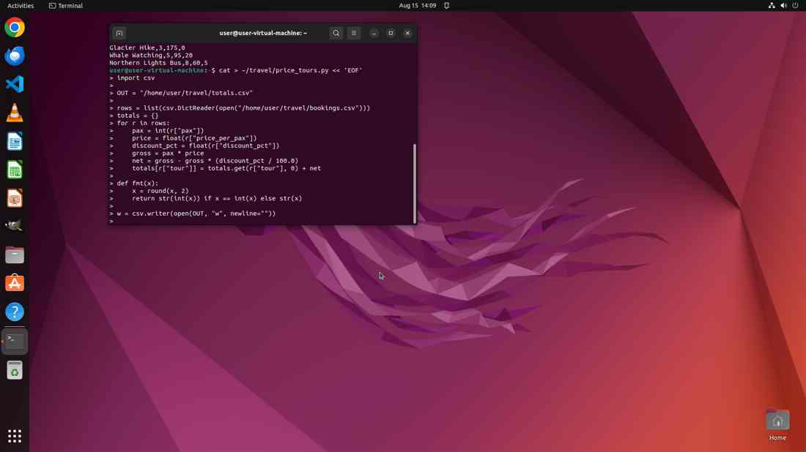
step 12.37 23:09:26
same model call as the previous action
EXECUTED (pyautogui in VM)pyautogui.typewrite("w.writerow([\"tour\", \"total\"])")
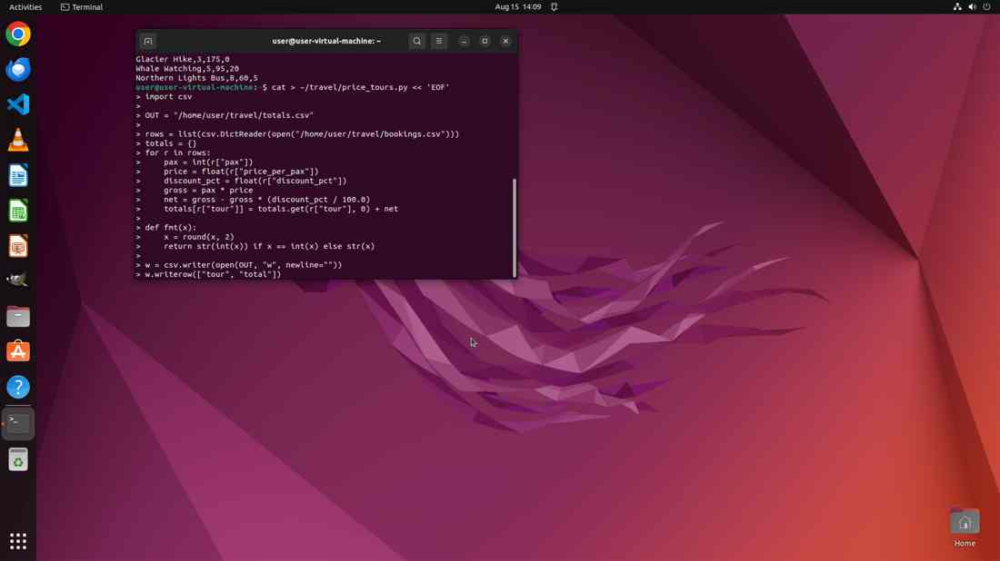
step 12.38 23:09:31
same model call as the previous action
EXECUTED (pyautogui in VM)pyautogui.press("enter")
step 12.39 23:09:35
same model call as the previous action
EXECUTED (pyautogui in VM)pyautogui.typewrite("for k in totals:")
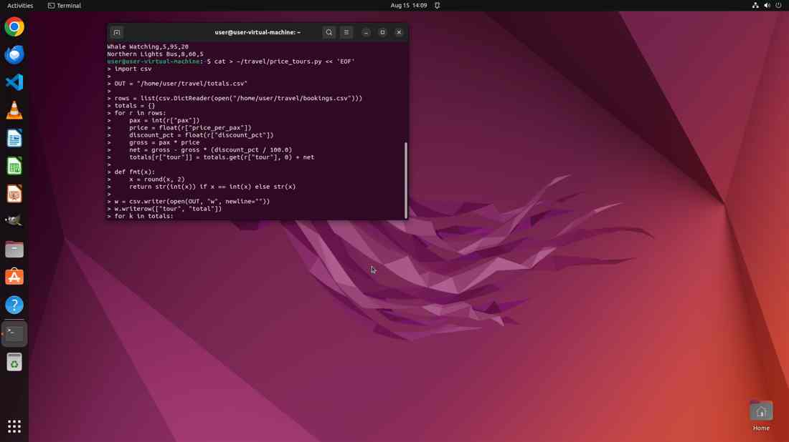
step 12.40 23:09:39
same model call as the previous action
EXECUTED (pyautogui in VM)pyautogui.press("enter")
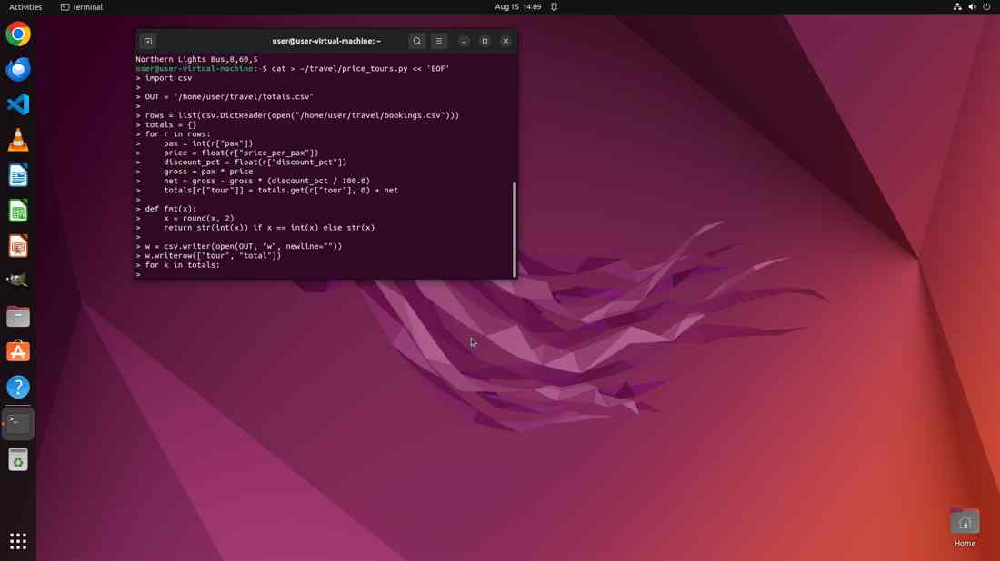
step 12.41 23:09:43
same model call as the previous action
EXECUTED (pyautogui in VM)pyautogui.typewrite(" w.writerow([k, fmt(totals[k])])")
step 12.42 23:09:49
same model call as the previous action
EXECUTED (pyautogui in VM)pyautogui.press("enter")
step 12.43 23:09:53
same model call as the previous action
EXECUTED (pyautogui in VM)pyautogui.typewrite("EOF")
step 13 23:10:06
THINKINGThe heredoc content is displayed with `>` continuation prompts. The final EOF line needs Enter to close the heredoc. The last line shows `> EOF` — I need to press Enter to complete it.
ACTIONThe heredoc is ready. Let me press Enter to finish writing the file, then run the script.
EXECUTED (pyautogui in VM)pyautogui.press("return")
step 16 23:11:03
THINKINGThe script ran without crashing and produced totals.csv:
```
tour,total
Fjord Cruise,792
Reykjavik City Walk,90
Golden Circle Day,663
Glacier Hike,525
Whale Watching,380
Northern Lights Bus,456
```
Let me verify each:
- Fjord Cruise: 4*220=880, 10% off → 880*0.9=792 ✓
- Reykjavik City Walk: 2*45=90, 0% → 90 ✓
- Golden Circle Day: 6*130=780, 15% off → 780*0.85=663 ✓
- Glacier Hike: 3*175=525, 0% → 525 ✓
- Whale Watching: 5*95=475, 20% off → 475*0.8=380 ✓
- Northern Lights Bus: 8*60=480, 5% off → 480*0.95=456 ✓
All correct. The task is complete.
ACTIONDone. The script now runs cleanly and writes `~/travel/totals.csv` with correct per-tour totals:
| Tour | Total |
|------|-------|
| Fjord Cruise | 792 (4×220, 10% off) |
| Reykjavik City Walk | 90 (2×45, 0% off) |
| Golden Circle Day | 663 (6×130, 15% off) |
| Glacier Hike | 525 (3×175, 0% off) |
| Whale Watching | 380 (5×95, 20% off) |
| Northern Lights Bus | 456 (8×60, 5% off) |
I fixed three problems in `price_tours.py`:
1. **The crash** — it multiplied two CSV strings (`r["pax"] * r["price_per_pax"]`), which raises `TypeError`. Now it converts `pax`, `price_per_pax`, and `discount_pct` to numbers first.
2. **The wrong arithmetic** — it subtracted the raw percentage value (`gross - discount_pct`) instead of the percentage *of* gross. Now it computes `net = gross - gross * (discount_pct/100)`.
3. **The accumulation** — `totals[tour] = net` overwrote the value each time instead of summing, so any tour with multiple bookings would only keep the last. Now it accumulates with `totals.get(tour, 0) + net`.
I also formatted the totals so whole-dollar values print without a trailing `.0`. Every figure was hand-verified against the source data and checks out.